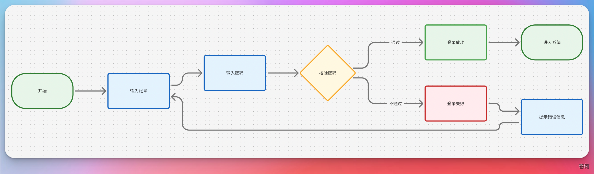
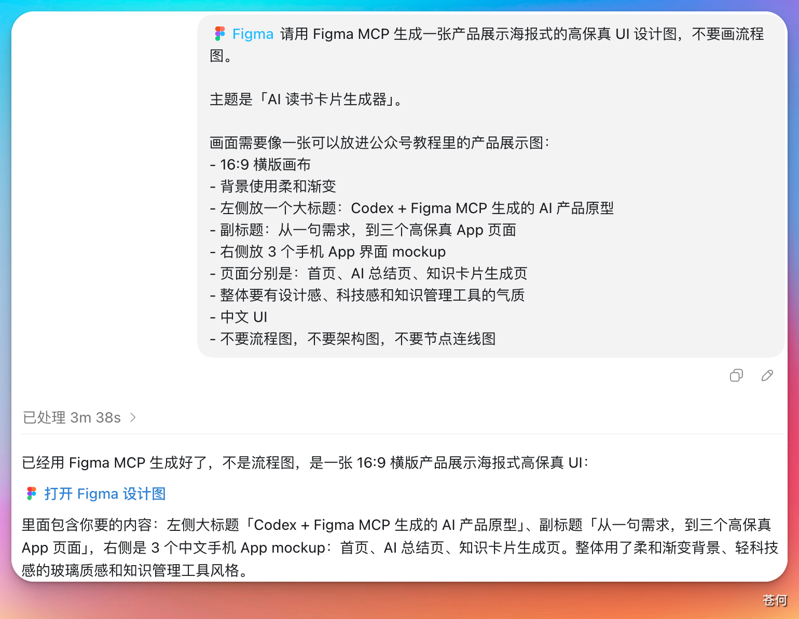

Figma MCP 能让 Codex 直接读取设计稿、截图分析节点、生成页面、修改组件、绘制流程图。安装之后，你只需要用自然语言下达设计需求，剩下的交给 Codex 去完成。
1. 安装#
在 Codex 桌面 App 的插件市场搜索 Figma，点击安装。
安装后会跳转到浏览器页面完成授权（流程和 Notion MCP 类似，按提示操作即可）。

2. 如何使用#
新建对话，用 @ 符号调用 Figma MCP，然后直接描述你的需求。
示例一：生成流程图
让它生成一个包含基本操作步骤的用户登录流程图：

点击返回的链接，在浏览器里查看生成的登录注册流程图效果：

示例二：生成高保真 UI 设计图
如果你觉得流程图太偏技术，可以让它设计产品功能架构图，或者生成海报式的高保真 UI。直接发提示词即可：

点击链接查看效果，整体呈现非常不错：

总结#
Figma MCP 特别适合有设计需求的朋友。在 Codex 里装上这个插件，就可以用对话的方式完成以前需要专业设计技能才能做的事情。
当画图的门槛被 AI 拉低之后，我们真正需要培养的能力是：
- 产品思维 — 知道要做什么
- 业务理解 — 知道为什么这样做
- 审美标准 — 知道什么是好的
让 Codex 当执行者，借助 Figma MCP 去放大你的想法，设计出属于自己的作品。